Step by step: from copying the files to the radio to the first F3K task. The template is for a discus launch glider with flaperons: the two flaperons on CH1 and CH2, the elevator on CH3 and the rudder on CH4. The brakes and the landing work from the throttle stick, without a switch.
Soar EdgeTX BW brings the SoarOTX soaring scripts by Jesper Frickmann to EdgeTX radios with a 128×64 black-and-white screen. For F3K it has two parts. The score keeper times the flights of a task: the launch switch starts a flight and catches it, the radio calls the times, and the screen adds up the scores. It has the FAI tasks A to N, the 2026 tasks included, practice tasks and altimeter tasks. The Configuration menu lets you set up the model right on the radio, without a computer. The model template provides the flight modes Launch, Zoom, Cruise, Speed, Float and Landing, the timers, logical switches, global variables, curves, mixes and channels, and the scripts read and change them.
What you need
A RadioMaster Pocket or GX12 with EdgeTX 2.12.
An ExpressLRS 4 receiver with at least 4 channels. The template is set up for the radio's internal ExpressLRS module.
A computer and a USB cable. The Pocket's microSD card can also go into a card reader.
Optionally an altitude sensor with telemetry (the Alt sensor): for the launch height callout and the altimeter tasks.
Optionally receiver voltage telemetry (Cels, RxBt, A1 or A2) for the low battery warning.
Optionally EdgeTX Companion, to try everything in the simulator first.
Safety
The Configuration pages write changes to the model at once and move the control surfaces.
Set up a copy of the model or work in the simulator first. Keep your fingers away from the surfaces and linkages while the receiver is on.
After setup, check the channel order, directions, endpoints and failsafe.
Before each launch, check the flight mode and that the brakes are in.
1Update EdgeTX and download the files
Check the EdgeTX version: press SYS, then PAGE<: the VERSION page opens. You need EdgeTX 2.12 (the latest is 2.12.5). If your version is older, update the firmware as the EdgeTX manual describes (manual.edgetx.org), for example with EdgeTX Buddy.
Download the official SD card content for EdgeTX 2.12. From the latest 2.12 release at github.com/EdgeTX/edgetx-sdcard/releases (now v2.12.3), take bw128x64.zip: the Pocket and the GX12 both have a 128×64 screen.
Download the voice pack of the same version from github.com/EdgeTX/edgetx-sdcard-sounds/releases, for example edgetx-sdcard-sounds-en-2.12.3.zip for English. Without it the radio does not speak numbers: times, heights and voltage.
Open the project page github.com/vitas/soar-edgetx-bw, press Code → Download ZIP and unzip it. The dist/SDCARD folder is not a clean SD card: it also holds models, radio settings and other files from the author's radio. Copy from it only the four items listed in section 2.
2Copy the files to the radio
Connect the radio to the computer with a USB cable and choose USB Storage (SD): the card shows up as a drive. The GX12 has no SD card: its internal memory shows up as the drive in the same way. The Pocket's card can also go into a card reader.
Back up the card (on the GX12, the internal memory), at least the MODELS and RADIO folders.
The official content first: unzip bw128x64.zip and the voice pack to the root of the card and agree to replace the files. Your models and the files you added yourself stay.
Then copy only these four items from dist/SDCARD:
What (from dist/SDCARD)
Where on the card
What for
SCRIPTS/TELEMETRY (the whole folder)
/SCRIPTS/TELEMETRY
the score keeper and the Configuration menu
SCRIPTS/FUNCTIONS/JFutil.lua
/SCRIPTS/FUNCTIONS
shared functions that the scripts load
TEMPLATES/3.SoarEdgeTx/*.yml
/BACKUP
the model templates; section 3 restores one of them as a model (create the folder if there is none)
SOUNDS/en/*.wav
/SOUNDS/en
the template's voice prompts: flight modes, launch, landing, crow off and “Flaps up”
Eject the drive safely, unplug the cable and restart the radio.
Do not copy the whole dist/SDCARD folderBesides the package it holds models (MODELS), radio settings (RADIO), firmware and other files from the author's radio. Copied to your card, they replace your models and settings.
Updating from an earlier packageDelete these old compiled files if they are on the card: JFXKcf.luac and JF3Ksk.luac in /SCRIPTS/TELEMETRY, and JFutil.luac and MENU.luac in /SCRIPTS/TELEMETRY/128x64. EdgeTX runs a .luac file instead of its .lua unless the .lua is newer, so the old files keep the old menu (without 1. Switches) or stop the screens from opening. The radio makes new ones by itself.
Radio voice in another language?The template prompts are recorded in English and live in /SOUNDS/en. Copy the same .wav files into the folder of your radio's voice language too, for example /SOUNDS/de, or they may not play.
3Create a model from the template
On black-and-white radios EdgeTX has no template list for new models: Create model at once makes an empty model named after its slot, such as MODEL02. The template is restored like a model backup with Restore model, which lists the files in the /BACKUP folder. EdgeTX on black-and-white radios does not read the /TEMPLATES folder: with the templates there and an empty or missing /BACKUP, Restore model shows “No models on SD”.
Press MDL: the model list opens. Select an empty slot with the roller and press ENTER. The menu offers Create model and Restore model; a slot that holds a model has no Restore model.
Choose Restore model, select the template for your radio and press ENTER: pocket-F3K for the Pocket, gx12-F3K for the GX12. The two differ only in the model name and the switches (section 5).
Select the new model: ENTER on it, then Select model.
Rename the model if you like: MDL, PAGE> to SETUP, the Name field.
Check the RF module: the template uses the internal ExpressLRS module (CRSF, 16 channels). For ExpressLRS, first do the steps in “ExpressLRS” below. Bind the receiver.
Set the failsafe: the surface positions for a lost signal, for example neutral. With ExpressLRS the failsafe is set in the receiver. Check it before the first flight (section 9).
Restore model: the templates from /BACKUP.
Made an empty model with Create model?Restore the template into another empty slot and select that model: ENTER on it, Select model. EdgeTX does not delete the selected model, so only then delete the empty one: ENTER on it, Delete model, and ENTER to confirm.
ExpressLRS
Update ExpressLRS in the radio's internal module and in the receiver to the same version 4, preferably the latest stable release. Versions 3 and 4 do not work together. Flash with ExpressLRS Configurator and use the same Binding Phrase for the module and the receiver. More at expresslrs.org.
Download the elrs.lua script and put it in /SCRIPTS/TOOLS. Delete the old elrsV3.lua and elrsV3.luac if they are there.
The template uses only CH1–CH4, which ExpressLRS sends at full resolution at every packet rate, so it needs no particular Packet Rate or Switch Mode. Set them in SYS → TOOLS → ExpressLRS as you prefer.
In the model settings (MDL, PAGE> to SETUP, the Internal RF block) the template has Arm using set to “Switch” and the Switch line below it empty (---): the model is not armed, so the ExpressLRS settings can be changed. The Arm using line appears once the module runs ExpressLRS 4.
When the settings are done, set the Switch line to “ON”. The model is then always armed, and dynamic power, if it is on, goes to maximum when telemetry or the link is lost. To change ExpressLRS settings later, set it to “---” for that time.
If the receiver outputs were remapped, set them back to the defaults: output 1 to channel 1 and so on.
4Connect the servos
Fig. 1. Wiring for the F3K template, top view. Next to each channel number is the output name in the model.
Channel
Name in the model
What to connect
CH1
Ai-L
left flaperon
CH2
Ai-R
right flaperon
CH3
Elev
elevator
CH4
Rudd
rudder
The flaperons do three jobs: ailerons, camber and brakes. The template is neutral: centers, travels and reverses are not fitted to any particular glider; that is done in section 6. The alignment curves Lft and Rgt (CV1, CV2) start linear. With the brakes in, the template puts the flaperons at about ±20 %: most of the servo travel below that goes to the brakes, the travel above it to the ailerons. Channels 25 to 32 are the template's internal channels for the brakes, snapflap and camber; they need no receiver output.
5Screens, keys and switches
The template has two telemetry screens. Screen 1 is the F3K score keeper, screen 2 is the Configuration menu with six pages. TELE opens the screens, PAGE> and PAGE< switch between them.
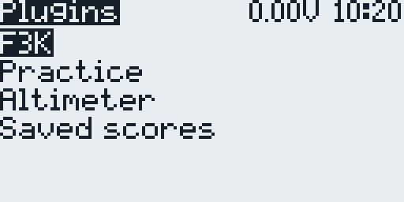
Screen 1: the score keeper starts with its plugins.
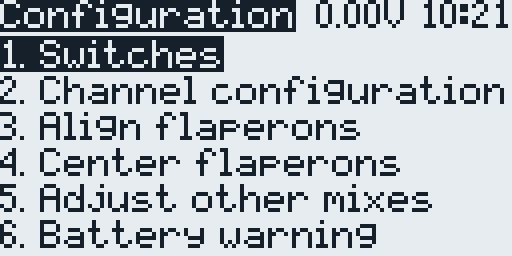
Screen 2: the Configuration menu.
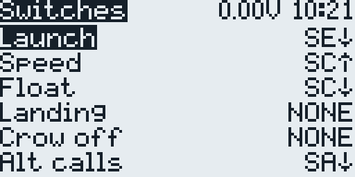
Page 1: the switches of the Pocket template.
Menu item
Page title
What it sets
1. Switches
Switches
the switches of the template's functions (6.1)
2. Channel configuration
Channel Config
channel order, direction, center and endpoints
3. Align flaperons
Alignment
aligning the two flaperons with each other
4. Center flaperons
Center
the flaperon position in Speed, and the travel for the brakes and the ailerons
5. Adjust other mixes
Adjust mixes
aileron to rudder, aileron differential, brake to elevator, snapflap
6. Battery warning
Bat Warning
receiver battery warning level
Keys
Key
In the Configuration menu and on its pages
Roller (turn)
select a menu item or a field, change a value; the help calls it ROT
ENTER (press the roller)
open a page, start or finish editing
RTN
leave a page or a field; the help calls it EXIT
MDL (short press)
show or hide the help of the page; the help calls it MENU
PAGE> / PAGE<
switch between the score keeper and the Configuration screens
On the score keeper screen the roller, ENTER and RTN have their own roles (section 7).
No need to saveChanges are written to the model at once; there is no Save button.
Switches and controls
The Pocket and GX12 templates differ only in these switches. The 1. Switches page moves the functions to other switches (6.1).
Function
GX12
Pocket
Launch: hold before the throw, let go at the throw; press again to catch
SG button
SE (spring-loaded): pull
Flight mode Speed / Cruise / Float
SF↑ / middle / SF↓
SC↑ / middle / SC↓
Brakes and the Landing flight mode
throttle stick
throttle stick
Launch height callout
SE↓
SA↓
Altitude every 10 s
SB↓
SB↓
Poker target time
rudder stick
rudder stick
Launch: while the launch switch is on, the flight mode is Launch. When you let go, Zoom follows and stays on until you move the elevator or aileron stick; then the flight mode follows SC (GX12 SF). The score keeper starts the flight timer when you let go and stops it at the next press (section 7).
Throttle stick: the brakes. Stick up gives full brakes: both flaperons go down, and the elevator compensates. Stick down retracts them; the bottom 5 % of the travel keep the brakes fully in. After each launch the brakes stay in until the stick has been at the bottom. If it is not there, the radio says “Flaps up” 3 seconds after the launch and then every 5 seconds.
Landing: half a second after the stick leaves the bottom, the flight mode Landing comes on and the radio says “landing”. When the stick returns to the bottom, Landing goes off at once and the flight mode follows the switch again.
Throttle trim T3 down from center adds camber in Cruise and Float; each of the two modes keeps its own T3. Up from center it does nothing, and in Speed it is off.
Elevator trim: Launch keeps its own elevator trim and T3; set them on the ground with the launch switch held. Zoom, Speed and Float add their own elevator trim to the Cruise trim. In Landing the elevator trim buttons set the brake compensation BkE (6.5), and the Cruise trim stays.
The radio announces the flight modes with the template's voice prompts.
Free on the Pocket: SD and P1. Free on the GX12: SA, SC, SD, the SH button, the S1/S2 sliders, P1, P2 and the SW1–SW6 buttons.
6Model setup step by step
Open the Configuration screen (PAGE> from the score keeper), select a page with the roller and press ENTER; RTN returns to the menu. Do the steps in order, with the model held securely.
6.1. Switches 1. Switches
The page moves the template's functions to other switches. Each row is one function, with the switch it uses now on the right. Select a row with the roller and press ENTER: the switch blinks. Turn the roller to choose another one, then press ENTER to save it or RTN to keep the old one.
The list starts with NONE (the function stays off) and ON (always on). Then come the positions with “!”, which means not: !SB↓ is on whenever SB is not down. After them come the switch positions, on the GX12 also the SW1–SW6 buttons. The page sets the first switch of a logical switch (see the table).
The switches of the Pocket template.
Row
What it does
Logical switch
GX12
Pocket
Launch
flight mode Launch; starts and catches the flights
L7
SG↓
SE↓
Speed
flight mode Speed
L3
SF↑
SC↑
Float
flight mode Float; with neither of the two, Cruise
L4
SF↓
SC↓
Landing
frees the brakes after a launch
L8
NONE
NONE
Crow off
keeps the brakes in
L35
NONE
NONE
Alt calls
the launch height callout
L1
SE↓
SA↓
Alt 10 sec
the altitude every 10 s, while Alt calls is on
L6
SB↓
SB↓
On the GX12, SG↓ is the SG button held. Two functions can share a switch, for example Landing on SD↓ and Crow off on SD↑.
Alt calls works while a flight is timed: 10 seconds after the launch the radio says the launch height, the highest altitude since the launch switch came on. Alt 10 sec then adds the current altitude every 10 seconds. Both need the Alt sensor.
Landing and Crow off at NONE (the template). The throttle stick does both jobs, as section 5 describes: after a launch the brakes stay in until the stick has been at the bottom, then the stick moves the brakes and switches the flight mode Landing. Only with both rows at NONE does the page turn on L52, which lets the stick switch Landing; with Landing at NONE it also turns on L50, which lets the stick free the brakes.
A switch for Landing brings back the SoarOTX way. After a launch the brakes stay in until the Landing switch comes on; if it was already on at the launch, switch it off and on again. The radio says “landing”, and from then on the stick moves the brakes. The flight mode Landing is not used. Until then the throttle stick gives only thermal camber in Float (6.7). The template's telemetry log, which EdgeTX writes to /LOGS, runs only while this switch is on, so with Landing at NONE there is no log.
A switch for Crow off locks the brakes in, and the radio says “crow off”. They stay in until something frees them again: the Landing switch, or, with Landing at NONE, the stick at the bottom once Crow off is off. The flight mode Landing is then not used.
To set the Pocket up as the original template was, choose SD↓ for Landing and SD↑ for Crow off; on the GX12 the brakes then work only while the SD button is held. A model made from an older template has no Landing and Crow off rows: restore it from the new template (section 3) to land with the throttle stick.
6.2. Channels and directions 2. Channel configuration
The page first warns: “Disconnect the motor!”. The F3K template has no motor: press ENTER. Each row shows the channel number, the name, the direction (> or <) and a bar with three marks (lower end, center, upper end) and a marker for the current position.
Select a channel with the roller and press ENTER.
Turn the roller to choose what to change: the number, the direction, all three marks together, the range, the lower end, the center or the upper end.
ENTER on the direction reverses the channel. ENTER on a mark starts editing: the roller moves it, ENTER or RTN finishes.
Leave the channels from 25 on as they are: they are the template's internal channels.
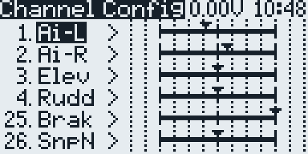
The F3K channels with their bars.
Action
Correct response
Elevator stick back
elevator up
Rudder stick right
rudder right
Aileron stick right
right flaperon up, left flaperon down
Throttle stick up, after it has been at the bottom
both flaperons down (brakes)
6.3. Flaperon alignment 3. Align flaperons
Aligns the two flaperons with each other over their whole travel. The changes are written to the curves Lft and Rgt (CV1, CV2) and to the centers and endpoints of the two outputs.
The throttle stick selects one of the five curve points.
The throttle trim moves both flaperons, the aileron trim aligns the left flaperon with the right one.
Order: the end points first, then the center, then the points between.
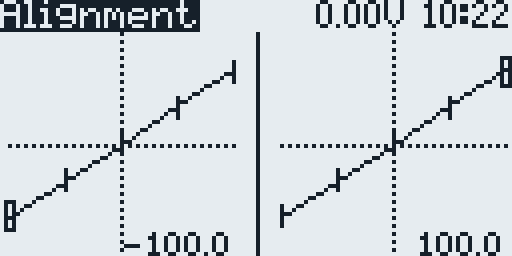
The two alignment curves.
Starting overENTER on this page asks whether to reset the flaperon outputs. A second ENTER makes the curves CV1 and CV2 straight and sets the center and the ends of the two outputs back to 0 and ±100; RTN keeps everything. If the curves and outputs do not pass the page's checks, the page opens with this question; RTN then leaves the page without changes.
6.4. Flaperon center 4. Center flaperons
Sets where the flaperons sit in Speed, with the brakes in and no camber. The same setting shares out the servo travel: Brk is the travel from there down to full brakes, and the page sets the aileron travel Ail to the travel left above it.
The throttle trim changes Brk, and the flaperons move with it. Set them where you want them in Speed: in line with the wing section, or with a little reflex.
Ail follows by itself: the higher Brk, the less aileron travel is left. The template has Brk 60 and Ail 80.
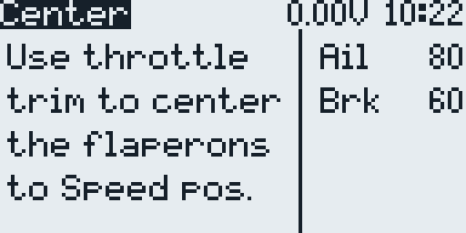
The template values.
6.5. Other mixes 5. Adjust other mixes
While the page is open, the trims change four values instead of moving:
Trim
Code
What it sets
Rudder
AiR
aileron to rudder
Aileron
Dif
aileron differential: the higher, the less the flaperons go down
Elevator
BkE
elevator compensation for the brakes
Throttle
Snp
snapflap: the flaperons follow the elevator stick
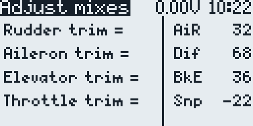
The template values.
The brake compensation goes from 0 with the brakes in to twice BkE at full brakes. The brake curve BrF (CV3) shapes it along the stick travel, together with the flaperons: the template's −100, 50, 100 moves both slowly at the start, for fine control. In flight you can also change BkE in Landing with the elevator trim buttons: if the model pitches as the brakes come out, click the trim against it.
6.6. Battery warning 6. Battery warning
Battery level shows the receiver voltage that the warning uses: the first sensor found of Cels, RxBt, A1 and A2. Turn the roller to set the Warning level in steps of 0.1 V for your receiver battery. ENTER or RTN closes the page.
Below the level the radio warns about the low battery and says the voltage, at most once every 20 seconds.
Without telemetry the voltage is 0.0 V.
6.7. Camber optional
Mode
Camber
Speed (Pocket SC↑, GX12 SF↑)
None, and T3 does nothing: the flaperons sit where 6.4 put them.
Cruise (SC or SF middle)
From T3: below center it adds camber, a little more with each click down; at center and above it adds none. The template has T3 at center.
Float (Pocket SC↓, GX12 SF↓)
From T3, kept apart from Cruise. With a Landing switch (6.1), also from the throttle stick: none at the bottom, 35 at the top; once that switch frees the brakes, the stick moves them too.
Landing
The camber of Cruise: its T3.
Why the stick gives no Float camber in the template. With Landing at NONE, the stick out of its bottom position means brakes and the flight mode Landing, which has no thermal camber. To have the stick camber in Float, give Landing a switch (6.1); otherwise use T3 or a slider.
Camber on a slider. Input I6:Cmb is kept for a slider or pot; its source MAX gives no camber. In MDL → INPUTS, set its source to the control: on the Pocket P1, on the GX12 S1, S2, P1 or P2. If a control is missing from the list, enable it in the radio's hardware settings (SYS → HARDWARE). The control's +100 end (the last 5 % of the travel) gives no camber; toward the −100 end the camber grows to twice the flight mode's Cmb (GV7): 20 in Cruise and Speed and 70 in Float in the template. It works in Cruise, Speed and Float and adds to T3. To keep Speed free of it, untick FM4 (Speed) in the flight modes of the Slider line in the CH28 mixes.
7Flying F3K
Screen 1 starts with the plugin list. Turn the roller to a plugin and press ENTER, then do the same for the task: its screen opens. RTN goes back. The task screen shows the task name at the top, the flights on the left, the target or flight time (Tgt, then Flt in flight) and the working time (Win) on the right. QR and EoW show the two options below.
Window→Launch→10 s grace→Flight counts→Catchthen the next launch, until the window or the task ends
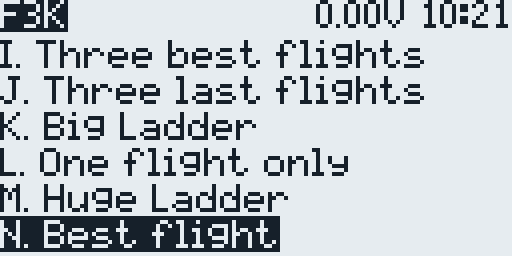
The F3K tasks, the 2026 tasks included.
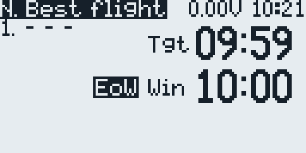
Task N: ready, EoW on.
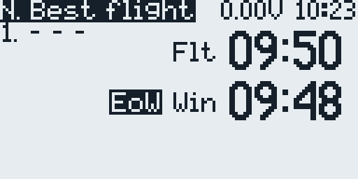
In flight: Flt and Win count down.
Window:ENTER starts the working time. You can also just launch: the first launch starts the window and the flight together. Between flights, ENTER pauses the window and shows the total score; ENTER again resumes it.
Launch: hold the launch switch (Pocket pull SE, GX12 press SG) through the run-up and let go as you throw. The flight timer starts, and the radio says the target time; a task without one beeps instead.
Grace period: for the first 10 seconds, a press of the launch switch cancels the flight, and it does not count. For the relaunch, let go and hold the switch again. After 10 seconds the flight counts, the radio says the launch height if Alt calls is on (6.1), and the launch counts against the task's limit.
In flight:Flt counts down the target time. The radio says the time left every minute, at 45, 30, 20 and 15 seconds, and then every second from 10.
Catch: press the launch switch: the timer stops and the time goes into the list. With QR (quick relaunch) on, the next flight starts when you let go, so you can hold the switch from the catch to the next throw. With QR off, a short beep as you let go says that no flight is timed; press and hold again for the next launch.
Landed out:RTN scores the flight zero.
End of the window: a long tone. With EoW on (the default), the timer of a flight still in the air stops there. Press the launch switch at the catch to score the flight, or RTN for zero. The task ends with “Done!” and the total.
Save: with the window paused or the task done, RTN asks “Save scores?”: ENTER adds them to /LOGS/JF F3K Scores.csv, RTN leaves them out. Saved scores in the plugin list shows them.
Key
On the task screen
ENTER
start or pause the window; not during a flight
Roller up
QR on or off: the next flight starts as you let go after the catch
Roller down
EoW on or off: the flight timer stops at the end of the window
RTN
a flight that counts: zero score; before the window: leave the task; window paused or task done: save the scores
Tasks
Plugin
Tasks
F3K
A. Last flight · B. Two last flights 3:00 and 4:00 · C. All up last down · D. Two flights only · E. Poker 10 and 15 min. · F. Three best out of six · G. Five best flights · H. 1-2-3-4 in any order · I. Three best flights · J. Three last flights · K. Big Ladder · L. One flight only · M. Huge Ladder · N. Best flight · A2. Last flight 10:00
Practice
Just Fly! · Quick Relaunch! · Deuces
Altimeter
W. Height gain · X. Under ceiling · Y. Throw low 2:00 · Z. Height Poker; they need the Alt sensor
Saved scores
Score browser
2026 FAI rules. L. One flight only and N. Best flight have a 10-minute window and flights up to 599 seconds. A keeps 7 minutes and 300 seconds. A2 is not an FAI task: it is A with a 10-minute window and flights up to 599 seconds, for practice or local rules.
Poker. The rudder stick sets the target time. When the stick rests for a second after a move, the radio beeps and says the time. During a flight the screen shows the next call.
The screen has room for 7 flights, so tasks with more flights stop at 7.
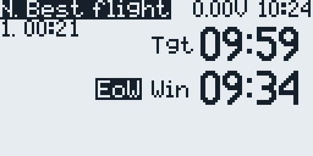
After the catch: the flight is in the list.
8Troubleshooting
What you see
What to do
The model has no score keeper or Configuration screen
The model was made with Create model and is empty. Restore it from the template (section 3).
Restore model shows “No models on SD” or no templates
The templates are not in /BACKUP, for example they were copied to /TEMPLATES. Copy TEMPLATES/3.SoarEdgeTx/*.yml to /BACKUP (section 2).
The menu has no 1. Switches, or the screens do not open after an update
Delete the old .luac files (section 2) and restart the radio.
After a launch the brakes stay in and the radio says “Flaps up”
Move the throttle stick to the bottom: after each launch the stick has to be there before it moves the brakes.
No camber from the throttle stick in Float
With Landing at NONE the stick lands instead. Give Landing a switch (6.1), or use T3 or a slider (6.7).
The brakes come out but the flaperons do not move far, or the elevator jumps
Check Brk (6.4) and BkE (6.5), and that the curve BrF (CV3) runs from −100 to 100.
The flight timer does not start at the launch
After a cancelled flight or a catch without QR, let go and hold the launch switch again before the throw. A paused window does not time flights: ENTER resumes it. A done task needs a new start: leave it with RTN and open it again.
A short flight is missing from the list
A press of the launch switch in the first 10 seconds cancels the flight (section 7).
RTN does not ask to save
The window is still running: pause it with ENTER first.
No launch height callout
Alt calls is off (Pocket SA↓, GX12 SE↓), or there is no Alt sensor: discover the sensors on the model's TELEMETRY page.
Alignment opens with “did not pass all checks”
A flaperon curve or output was changed outside this page. ENTER resets them; then align the flaperons again (6.3). RTN leaves them as they are.
The help covers the page, or does not show
Press MDL: it shows or hides the help.
No voice prompts for the flight modes
Copy SOUNDS/en/*.wav to /SOUNDS/en, and to the folder of your voice language (section 2).
9Checklist before the first flight
All control surfaces move the right way in Cruise, Speed and Float.
The flaperons are aligned and sit where you want them in Speed.
The launch switch gives the Launch flight mode, and Zoom follows until you move the elevator or aileron stick.
After a launch, the brakes stay in until the throttle stick has been at the bottom; then stick up brings both flaperons down smoothly, and the elevator compensates.
Landing comes on with the brakes and goes off with the stick at the bottom.
The failsafe is set and checked.
The altitude and receiver voltage telemetry show, and the voice prompts are heard.
A range check is done.
The project page is github.com/vitas/soar-edgetx-bw; its README shows what is new compared with SoarOTX, and the F5J guide describes the F5J templates. This guide describes the templates and scripts as of November 2026.